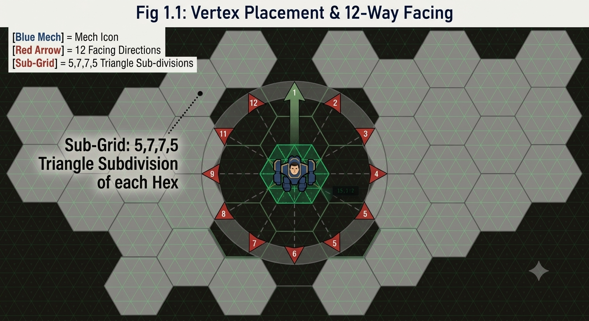
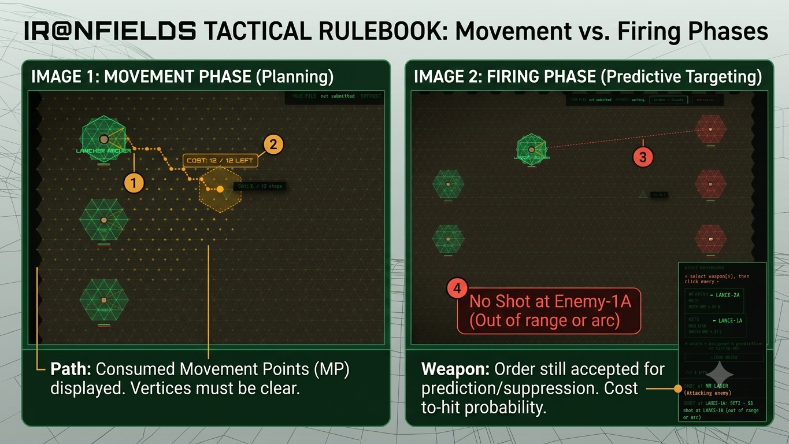

// INSTRUCTIONS & RULES OVERVIEW
Ironfields is a tactical hex-based mech combat game inspired by classic tabletop games like BattleTech. While it shares the genre's DNA, Ironfields streamlines several mechanics to keep combat fast, readable, and focused on positioning and timing rather than bookkeeping.
This page explains how Ironfields works and how it differs from BattleTech. If you're new to the genre, read through the sections below. If you already know BattleTech, jump straight to the comparison table.
// 1. BASIC CONCEPTS
Hex Grid
The battlefield is a grid of hexagons (six-sided cells). Each hex represents a fixed distance — moving from one hex to an adjacent one costs Movement Points (MP). Your mechs are stationed on vertices between hexes, which gives smoother movement arcs and more natural facing directions.
Movement Points (MP)
Every mech has a maximum MP value based on its chassis class. Moving costs MP proportional to terrain type. You spend MP as you walk along the vertex graph, and you stop when MP runs out or you reach your destination.
Facing
Mechs face in one of 12 directions (every 30°), not just the hex grid's axial directions. This gives much finer aiming control. Your weapons have frontal arcs — you must be facing the right way to fire. The facing cone is shown in green (your arc) and red (enemy arc) when you select a weapon.


Turn Structure
1. Planning Phase — You give orders to every mech in your lance:
move, rotate, or fire. Orders are simultaneous: all mechs execute
at once.
2. Resolution Phase — All movement happens, then all shots
resolve. You cannot cancel orders once submitted.
3. Next Turn — Repeat until one side is eliminated.
In BattleTech, units activate one at a time in an initiative order. In Ironfields, all orders are submitted simultaneously then resolved together. This means you plan your whole lance's actions before anything happens — no reactive turns, no initiative rolls.
// 2. CONTROLS
Selecting Units
- Left-click a mech to select it.
- Clicking a selected mech cycles to Fire mode.
- Right-click anywhere to reset selection and return to Select mode.
Moving
- Select a mech, click [ MOVE ] in the toolbar, then click a destination vertex on the map.
- The path is highlighted as you move your cursor. Click to confirm.
- If a path is blocked by terrain or another mech, you can't select that destination.
- [ UNDO ] reverts the last move of the selected mech.
Firing
- Select a mech, click [ FIRE ], then pick a weapon from the right panel.
- Click an enemy mech to assign the fire order.
- If no enemy is in range, the weapon shows a "No Shot" warning but you can still assign the order (for predictive targeting).
- [ CLEAR ORDER ] removes the selected weapon's fire order.
Other Modes
- [ ROTATE ] — change a mech's facing without moving.
- [ LOS ] — Line of Sight check. Shows which hexes are visible from the selected mech.
- [ OUTLINE ] — toggle mech outline visibility on the map.
// 3. COMBAT BASICS
Weapons & Heat
Every mech carries weapons drawn from its chassis template. Each weapon has:
- Range — maximum hexes the shot can travel.
- Heat — how much heat the weapon generates per shot.
- To-Hit number — higher numbers are easier to hit (1–6 dice roll).
- Damage — usually expressed as Xd6 (roll that many six-sided dice).
Mechs generate heat from movement and firing. If heat exceeds the mech's capacity, it overheats and shuts down temporarily. Managing heat is a core tactical decision.
Weapon Reference Table
Complete listing of all weapons available in Ironfields, organized by type.
Energy Weapons (Lasers)
| Weapon | Type | Heat | Damage | Range |
|---|---|---|---|---|
| Light Laser | Laser | 2 | 3 | 6 |
| Light Laser (B) | Laser | 2 | 3 | 6 |
| Medium Laser | Laser | 4 | 5 | 9 |
| Large Laser | Laser | 8 | 8 | 14 |
| Pulse Laser | Laser Pulse | 4 | 3 | 7 |
Ballistic Weapons
| Weapon | Type | Heat | Damage | Range |
|---|---|---|---|---|
| AC/5 | Ballistic | 1 | 5 | 10 |
| AC/10 | Ballistic | 2 | 10 | 7 |
| AC/20 | Ballistic | 10 | 20 | 4 |
| Gauss Rifle | Ballistic | 0 | 15 | 15 |
Missile Weapons
| Weapon | Type | Heat | Damage | Range |
|---|---|---|---|---|
| SRM-2 | Missile | 2 | 4 | 6 |
| SRM-6 | Missile | 4 | 12 | 6 |
| LRM-5 | Missile | 2 | 5 | 18 |
| LRM-10 | Missile | 4 | 10 | 21 |
| LRM-15 | Missile | 6 | 15 | 21 |
| LRM-15 (B) | Missile | 6 | 15 | 21 |
Special Weapons
| Weapon | Type | Heat | Damage | Range |
|---|---|---|---|---|
| Flamer | Flamer | 3 | 2 | 3 |
| ECM Suite | ECM | 0 | 0 | 0 |
Note: (B) variants are improved versions with the same stats but may have different critical space requirements or availability. The Gauss Rifle generates no heat but has high damage and range. ECM produces no damage or heat — it disrupts enemy targeting instead.
Armor & Hit Locations
Each mech has armor values for five locations: Head, Torso (front/rear), and Arms (left/right). Critical hits destroy weapons or systems in specific locations.
Ironfields abstracts hit-location tracking. You don't manually roll for where a shot lands — the system calculates location probability based on your facing arc and the enemy's orientation. This keeps combat flowing without sacrificing tactical depth.
Damage
- Each location has a HP value. When HP reaches 0, the location is destroyed.
- Destroyed locations lose their weapons and systems permanently.
- The Head and Torso cannot be destroyed (they cap at 0 HP).
- A mech is eliminated when its Torso is destroyed or it takes catastrophic damage.
// 4. AI DIFFICULTY TIERS
Ironfields includes four AI opponents, each with distinct behaviour:
| Tier | Behaviour | Best For |
|---|---|---|
| Beginner | Rushes the closest enemy and fires the best available weapon. Aggressive, predictable. | Learning the controls |
| Intermediate | Uses A* pathfinding, holds position when in range, conservative movement. Will flank if blocked. | Practicing positioning |
| Advanced | Utility scoring — evaluates all enemies by threat, value, and optimal range. Retreats when outnumbered and damaged. | Testing tactical planning |
| Expert | Personality profiles with emotional states (fear, rage, panic). Makes suboptimal decisions that feel human. | Experienced players seeking challenge |
// 5. BATTLETECH VS IRONFIELDS — COMPARISON
If you're coming from BattleTech, here's how the two systems compare across the major mechanical differences:
| Aspect | BattleTech | Ironfields |
|---|---|---|
| Grid | Hex grid. Units occupy entire hexes. | Sub-triangle grid. Units sit on vertices between hexes, allowing smoother movement and finer positioning. |
| Activation | Initiative order — units activate one at a time. First player moves, then second, etc. | Simultaneous planning — all orders submitted at once, then resolved together. No initiative rolls. |
| Facing | Six frontal arcs (30° each) tied to hex orientation. Changing facing costs MP. | 12 directions (every 30°), independent of movement. Facing changes are free actions. |
| Movement | Walk/Jump/Run phases. Different MP costs. Turning during movement is complex. | Single movement phase. Walk along vertex graph, spending MP per hex. No separate jump/run phases. |
| Heat | Heat generated by weapons and engines. Internal Structure damage can cause overheating. | Simplified heat — generated by weapons and movement. No engine heat subsystem. |
| Hit Locations | Roll 2d6 to determine hit location. Critical hit table for each location. | Location probability calculated automatically based on facing arc and orientation. No manual location rolls. |
| Line of Sight | Trace line through hex centres. Complex rules for elevation, intervening units, and terrain. | Simplified LOS check. Visual overlay shows visible hexes from selected unit. |
| Multiplayer | Tabletop only (face-to-face or online via BattleTech Online/Tabletop Simulator). | Built-in online multiplayer. Real-time simultaneous planning with host authority. |
| Chassis Selection | Full tech manual — hundreds of mechs with detailed stats. | Template-based — three chassis classes (Light, Medium, Heavy) with balanced weapon pools. |
| Speed | A single turn can take 30–60 minutes with a full lance. | Designed for faster play — typical engagement 10–20 minutes. |
Ironfields isn't trying to replicate BattleTech exactly. It takes the feel of tactical mech combat — positioning, heat management, arc-based firing, lance coordination — and strips away the bookkeeping that slows play down. The result is a game that's quicker to learn, faster to play, and easier to run online.
// 6. QUICK TIPS
- Don't cluster your lance. Spread out on the vertex grid to maximise your firing arcs and minimise collateral damage.
- Watch your heat. Firing everything in one volley is tempting but leaves you vulnerable next turn.
- Use the [ LOS ] mode. Before committing to a position, check what your mechs can actually see and shoot at.
- Right-click to reset. If you've made a mistake or changed your mind, right-click anywhere to clear selection and start over.
- Predictive targeting. Weapons that can't currently fire will show a warning but still accept the order — useful for setting up crossfires.
- Face your enemies. Weapons only fire within your frontal arc. Rotate to face threats before committing to a firing solution.
Ironfields v2.7 — Tactical Hex Combat
For support or feedback, visit the GitHub repository.